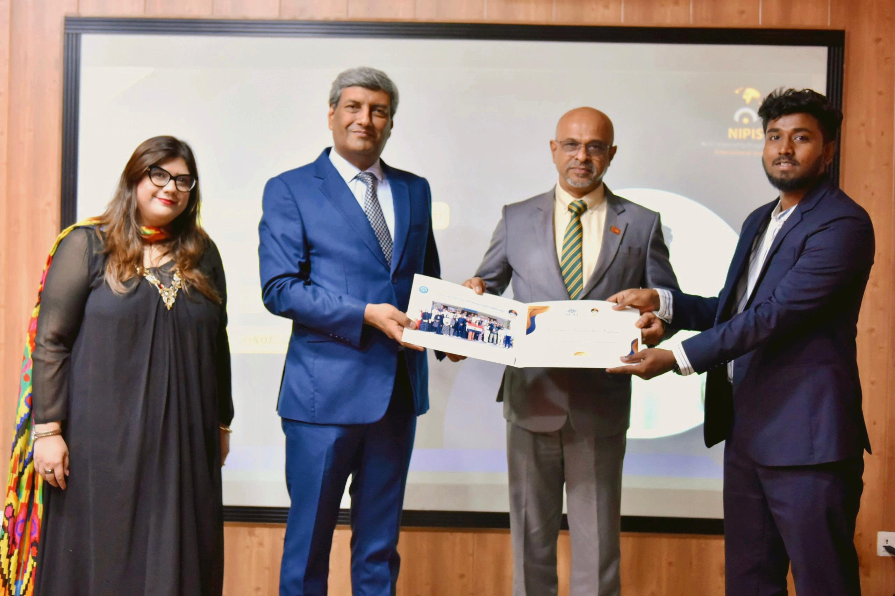

Allama Iqbal Scholarship: A Gateway for Sri Lankan Students to Pursue Higher Education in Pakistan
By Abdhur Rahman Nasir | October 7, 2025
As a Sri Lankan student pursuing my BS in Computer Science at PAF-IAST in Pakistan, I owe much of my journey to the Allama Iqbal Scholarship. Named after the visionary poet-philosopher Allama Muhammad Iqbal, this program by the Higher Education Commission (HEC) of Pakistan opens doors for Sri Lankan youth to access quality education abroad.
Launched to strengthen bilateral ties, the scholarship covers undergraduate, master's, and PhD programs in fields like engineering, medicine, and sciences. It includes tuition, accommodation, and stipends, easing financial burdens. As a recipient, I've experienced firsthand how it fosters cultural exchange and academic excellence.

The application process is merit-based, involving aptitude tests and interviews. Eligibility requires strong academic records, with preferences for STEM fields. For 2025, applications open soon via the HEC portal. My tip: Prepare thoroughly, highlighting how your goals align with Pakistan-Sri Lanka relations.
Beyond academics, the scholarship builds networks. Interacting with Pakistani peers has broadened my perspectives, inspiring projects like AI-driven cultural preservation tools. Challenges like adapting to new climates exist, but support from the Pakistani High Commission in Colombo helps.

The program's impact is profound. Many alumni return to Sri Lanka as professionals, contributing to development. For aspiring students, it's a gateway to world-class universities and global opportunities. As I near graduation, I'm grateful for this chance – it transformed my dreams into reality.
If you're a Sri Lankan student eyeing higher education, consider the Allama Iqbal Scholarship. It's not just funding; it's a bridge to a brighter future.